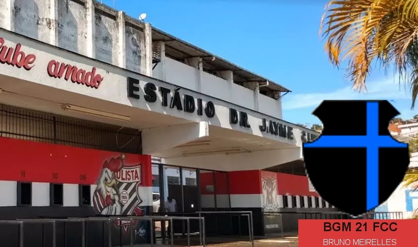
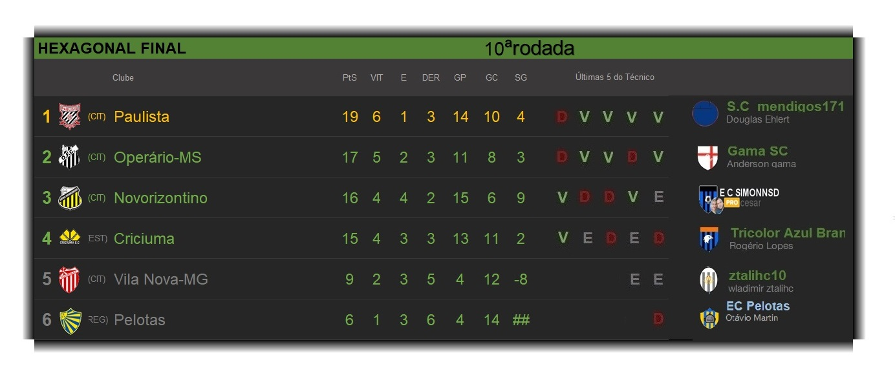
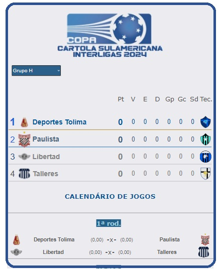
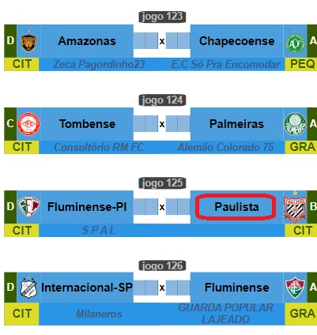

Campeonato de Cartola
A vitória no cartola é o sucesso do seu time!


Redação Cartola - 02/08/2024 - 10h05min 
Clube do Interior Paulista desde o ano passado vem fazendo história no Campeonato de Clube de Cartola, quando saiu campeão da Série "C" de 2023 comandado pelo "S.C Mendigos 171", marcando seu primeiro título e acesso à segunda divisão nacional.
Ao conquistar a Série "C" do ano passado, clube obteve passaporte para disputa da Copa Sulamericana Interligas de clubes, cujo o início está marcado para a próxima volta (rodada 21), com o primeiro compromisso diante do Deportes Tolima, válido pela primeiro jogo da 1ª fase do grupo "H".
Não bastasse a inédita participação na Sulamericana, também é uma das 8 agremiações que, por terem se classificado naquela copa interligas, obtiveram o privilégio de iniciarem a Copa do Brasil bem depois, a partir da quinta-fase. Nesse certame, o duelo será contra o inesperado Fluminense do Piauí, comandado pelo professor "SPAL". Em caso de empate, a vantagem é do Paulista, clube da Série B, frente ao não divisionado "fluzinho". O vencedor pegará o poderoso Flamengo, comandado por "Catheringer FC", campeão da Libertadores de 2022. 
Com o calendário recheado de competições importantes, clube tratou de contratar um técnico com histórico de título, recaindo a escolha sobre o "BGM21 FC", do cartoleiro Bruno Meirelles, campeão gaúcho 2020, com último trabalho no Guarani de Campinas, demitido ao final da 12ª rodada da mesma série "B", em que atualmente o Paulista ocupa a sétima colocação, a somente dois pontos de diferença do G4 que garantirá acesso à divisão da elite nacional do ano que vem.